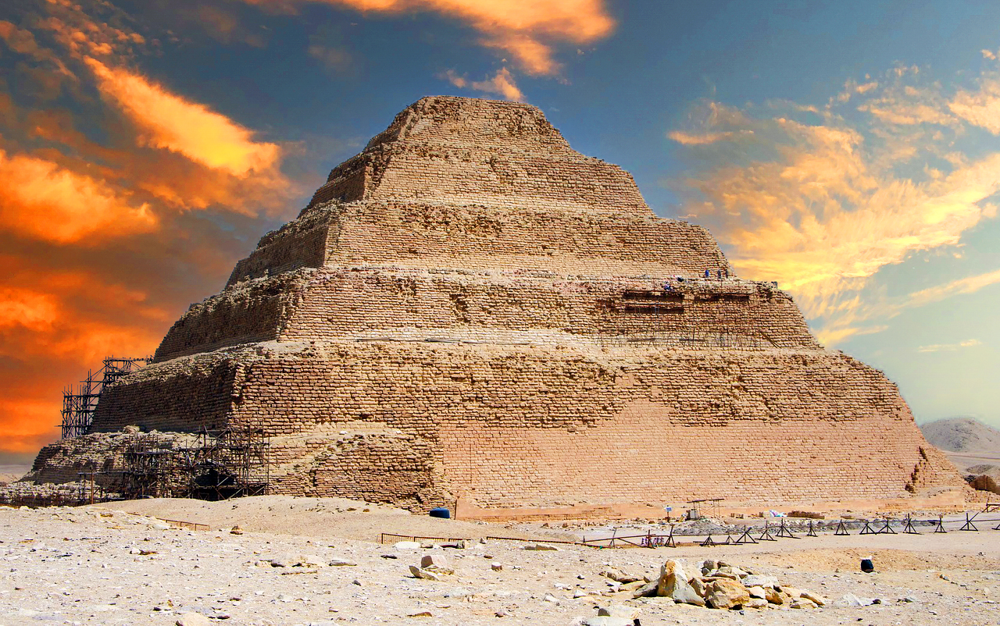
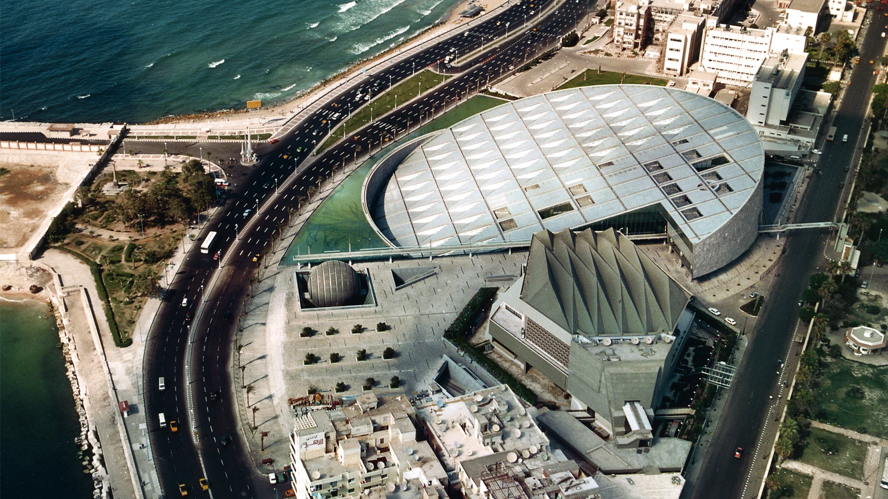
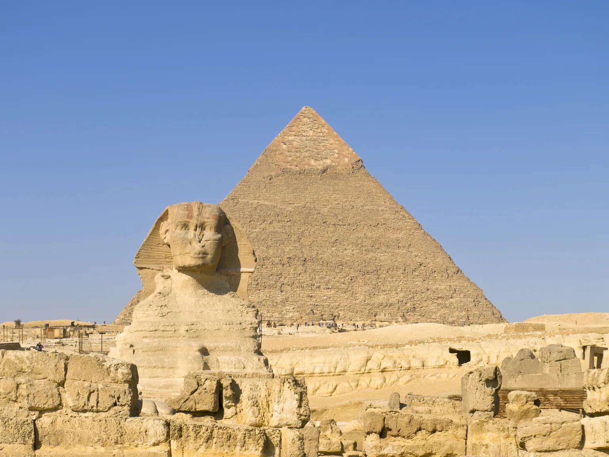
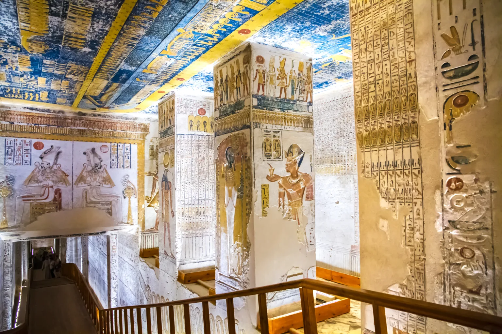
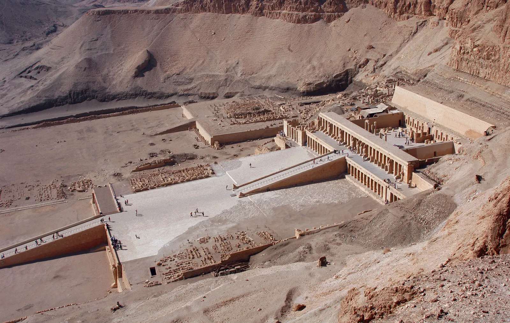
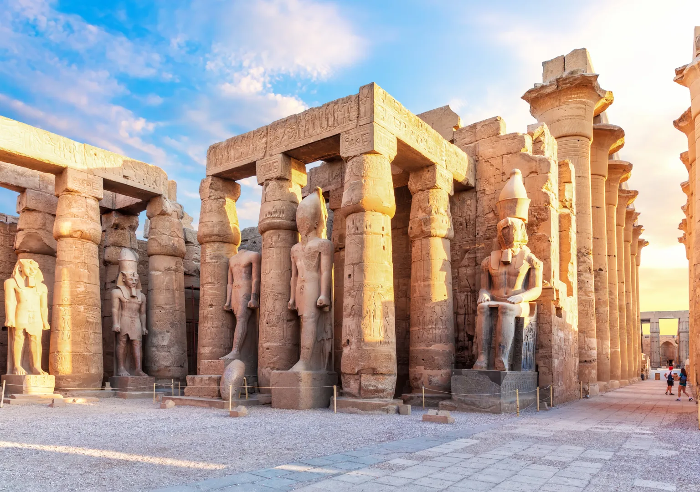

Though there are many mastabas (flat-roofed, mud-brick, rectangular buildings used as burial tombs) and 17 pyramids in the ancient Egyptian necropolis of Sakkara, the most notable building is the Step Pyramid of the Third Dynasty pharaoh Djoser, sometimes spelled Zoser. The Step Pyramid is the oldest complete, hewn-stone building known. It was designed by Imhotep, the first architect and physician known by name in written history. He is thought to have been responsible for the first known use of columns in architecture, and he is recognized as the founder of Egyptian medicine.
The idea of rebuilding the Bibliotheca Alexandrina was first launched in 1974 after visiting U.S. President Richard Nixon asked to see the ancient Library of Alexandria—which had disappeared some two millennia earlier. His gaffe prompted one of the truly grand public projects of the 20th century.
Won in competition by the young Norwegian-based architectural and design office of Snøhetta, the funding came from patrons as diverse as UNESCO, the country of France, and Saddam Hussein. From afar it looks like an obliquely tilted solar disk. A grill of aluminum panels functions like the mashrabyyra screens over the windows of traditional Egyptian houses, with deftly incised north-facing clerestories that allow in daylight without glare.


The four Giza pyramids and Great Sphinx are among the most impressive, memorable structures in history. These icons of ancient Egypt were built 4,500 years ago during the Fourth Dynasty of the Old Kingdom. They were the eternal resting places for the nation’s great pharaohs, who expected to rise as gods in the afterlife. The pyramids are spectacular tombs built to memorialize and prepare the pharaohs for eternity and contained everything the god kings would need to thrive after death.
The Great Sphinx joins the pyramids on the Giza plateau. The reclining limestone statue has the head of a man, the body of a lion, and the unreadable expression of the Mona Lisa. The Sphinx’s nose is missing, but no one is really sure why. Rumors abound that Napoleon Bonaparte had his men destroy it with a cannon during his French campaign in Egypt.
From the 16th to 11th century BC, tombs were cut out of the bedrock of the Valley of the Kings in the desert outside of Thebes. These 63 tombs, which contained up to 120 rock-cut rooms each, were created for the pharaohs and powerful nobles of the New Kingdom.
These lavishly decorated tombs, painted with detailed scenes from mythology and royal life, were filled with treasure. From gold and clothing to mummified remains, Egypt’s ruling class were interred with an eye to meeting all of their wants and needs in the afterlife. The most famous resident of the Valley of the Kings was Tutankhamen, whose miraculously intact tomb was uncovered in 1922.
 

The Luxor Temple is an ancient Egyptian temple complex that lies on the east bank od the Nile. Luxor Temple’s Egyptian history goes back over 3,400 years. A part of the ancient city of Thebes, it was the coronation site of kings and pharaohs from the new kingdom through at least Alexander the Great. The complex has contributions from many of the most recognizable names of antiquity. It consists of structures commissioned by Amenhotep III, Alexander the Great, Tutankhamun, Ramesses II, and even the Ancient Roman and Holy Roman empires.